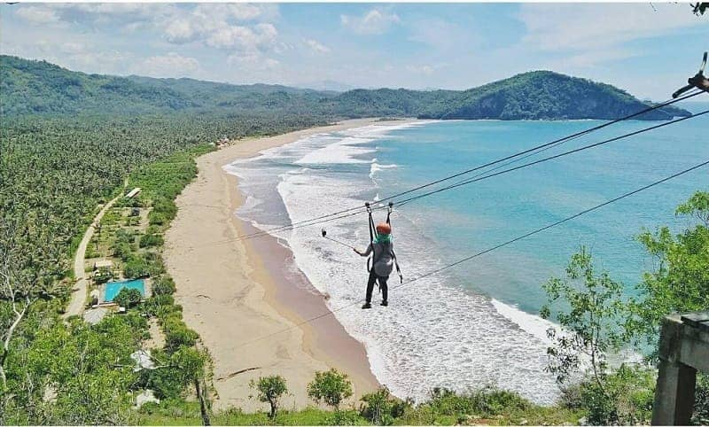

|  | Pantai Taman adalah obyek wisata yang tepatnya terletak di Desa Hadiwarno, Kecamatan Ngadirojo, Pacitan. Di tempat ini, lo bisa menikmati pemandangan khas pantai, yaitu pasir yang lembut berwarna putih kecoklatan. Selain itu, nikmati pula panorama air laut yang berwarna biru dan suara merdu dari debur ombak yang memecah karang. Nuansa seperti ini, jelas akan membuat perasaan lo jadi tenang dan menghilangkan segala stress yang ada di pundak sejenak. Selain panorama tersebut, uniknya, di tempat ini tersedia wahana menantang yang dapat kalian coba. Jangan bayangkan flying fox yang biasa lo temukan di tempat outbound, di sini flying foxnya berbeda karena panjang dari wahananya sendiri sekitar 400 meter. Bisa dibilang, wahana ini terpanjang se-Indonesia dengan waktu tempuh kurang lebih 30 detik. Benar-benar menantang nyali, kan?. |
Terbang dan meluncur di ketinggian 74 meter dari permukaan laut (dpl) yang melintang di atas hamparan pantai jelas akan memberikan sensasi tersendiri yang menguras adrenalin. Keunggulan dari flying fox ini sendiri adalah mampu melintasi tebing dan laut dengan panjang 415 meter, tinggi 74 meter, kekuatan teknik 2,5 ton, kecepatan 50 km, dan waktu tempuh rata-rata 30 detik. Saat lo mencobanya, sajian panorama pantai yang berbeda dan sangat menakjubkan pun siap lo nikmati. Lo bisa melihat laut lepas, hijaunya nyiur kelapa di Pantai Taman, hingga panorama pulau-pulau kecil di seberang lautan. Flying fox ini dibuka setiap Sabtu dan Minggu, dengan kisaran harga Rp35 ribu/orang. Untuk mencobanya di hari lain tetap bisa, dengan syarat dipesan dengan biaya minimal setara dengan 10 orang. Buat kalian yang takut dengan ketinggian atau gak bisa berenang, tenang, masih ada lagi kegiatan asyik di tempat ini, yaitu melihat penyu. Kawasan pesisir Pantai Taman Pacitan, tepatnya di Desa Hadiwarno ini adalah salah satu kawasan yang sering digunakan penyu untuk bertelur. Beberapa spesies penyu yang sering bertelur di kawasan ini antara lain penyu sisik, penyu hijau, penyu belimbing, dan juga penyu abu-abu. Namun, penduduk di sekitar Pantai Taman mengatakan gak ada informasi pasti kapan penyu akan datang ke pantai dan bertelur karena sulit ditebak. Sebab, biasanya setelah bertelur di pantai, penyu-penyu ini akan kembali ke perairan Australia dimana mereka mencari makan. |
|
Syarat-syarat Umum Menaiki WahanaTinggi Minimal 110 cmBiasanya wahana permainan menetapkan tinggi minimal untuk anak-anak sekitar 110 cm, pastikan anak Anda telah mencapai tinggi yang diperbolehkan.Tak Ada Penyakit/FobiaUntuk wisatawan yang punya penyakit jantung atau fobia ketinggian lebih baik dihindari, ya.Pakaian NyamanSelama meluncur Anda akan mengenakan alat pengaman, usahakan gunakan pakaian yang nyaman supaya memudahkan kru memasangkan alat tersebut.Ikuti ArahanDemi keamanan, ikutilah seluruh arahan yang diberikan oleh para kru. |
|